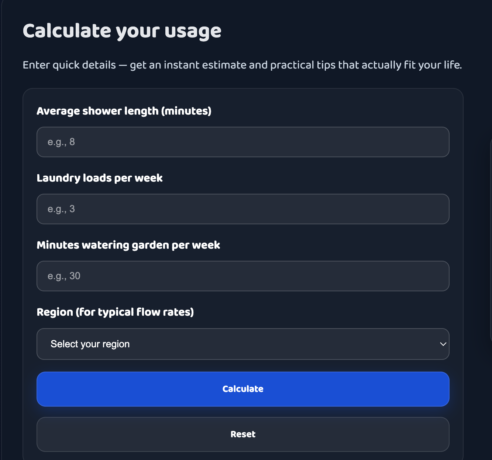
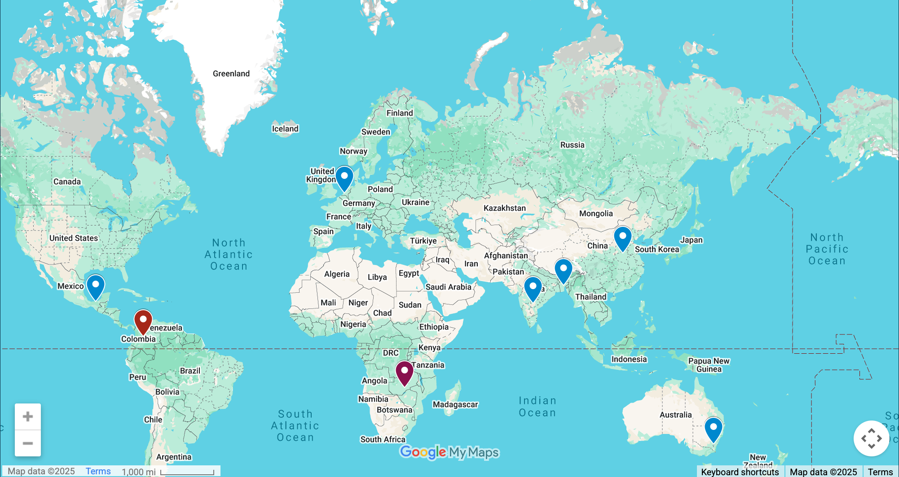
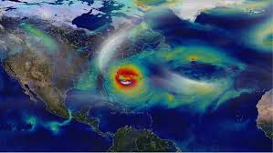

Mapping power, elevating voices, and building change
Accessible geospatial tools that turn data into decisions: Water Calculator, Conservation Map, and NASA‑powered weather. Built for clarity, performance, and real users.
Accessible geospatial tools that turn data into decisions: Water Calculator, Conservation Map, and NASA‑powered weather. Built for clarity, performance, and real users.
Technology should serve people. These tools are practical, accessible, and tuned for real-world decisions — water conservation, community mapping, and weather resilience.

Make conservation personal. Enter everyday details to see your water footprint come to life — small changes add up: shorter showers, smarter irrigation, mindful choices.
Learn More
A living atlas of hope. Each marker represents a real effort — rivers restored, community projects, resilience stories — connecting local actions to a global movement.
Learn More
Satellite data, human outcomes. Forecasts and overlays that help farmers, planners, and families prepare and adapt — turning science into community resilience.
Learn More
Regional datasets + household inputs + behavioral modeling estimate impact. Compare choices to community averages and get practical guidance.
Open Calculator
Interactive layers for restoration projects, water quality zones, and community efforts. Filter by region, type, or impact to see patterns.
View Map
Satellite‑powered forecasts, drought tracking, and climate overlays. Supports agriculture, emergency planning, and long‑term resilience.
Explore NASA ToolsScreen reader parity, captions, language access, and keyboard controls.
Lazy loading, asset discipline, and clean separation of code and data.
Version control, documented patterns, and reliable deploys.
Work that honors local priorities and supports informed decisions.
Accessibility isn’t an afterthought — it’s the foundation. Every tool is built with semantic structure, keyboard parity, screen reader support, captions, transcripts, and bilingual narration. We test on real devices, in real conditions, with real users. Because clarity isn’t optional — it’s justice.
We ship with discipline. Version control is clean. Commits are documented. Deploys are lightweight and reversible. Every update respects the user — no surprises, no regressions, no broken flows. We believe in stability, transparency, and workflows that scale.
Absolutely. We support bilingual blocks with toggleable narration, localized phrasing, and culturally aware design. English, Spanish, Hindi — and more to come. Because language is access. And access is power.
We optimize for reality. Lazy loading, asset discipline, minimal layout thrash, and zero tolerance for jank. Our tools run fast on low-bandwidth, low-spec devices — because performance is equity, and speed is dignity.
Yes. We welcome collaborators, contributors, and co-creators. Whether you’re a mapper, educator, developer, or organizer — there’s room for you. Propose a pilot, share a dataset, or help shape the next module. This isn’t a product. It’s a movement.
Brief, prototype, iterate, ship — tight cycles that keep quality high.
Version control, clear repos, tidy handoffs, and accessible outputs.
Screen reader support, captions, transcripts, bilingual content, and keyboard controls.